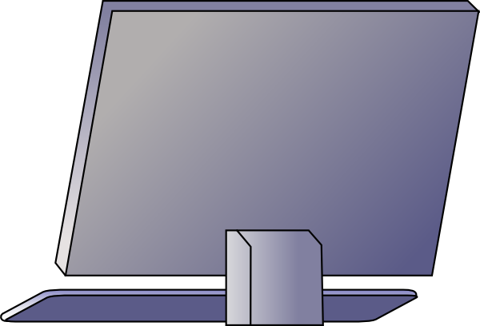
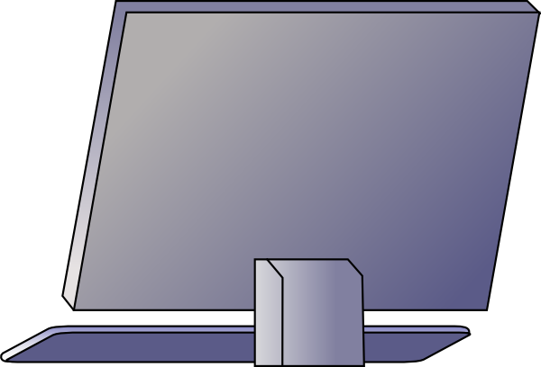

a web designer.

I'm a web designer / developer based in Dhaka, Bangladesh. I have a passion for web design and love to create for web and mobile devices.
I like to keep it simple. My goals are to focus on typography, content and conveying the message that you want to send.
I'm a developer, so I know how to create your website to run across devices using the latest technologies available.
 

If you have a project that you want to get started, think you need my help with something or just fancy saying hey, then get in touch.